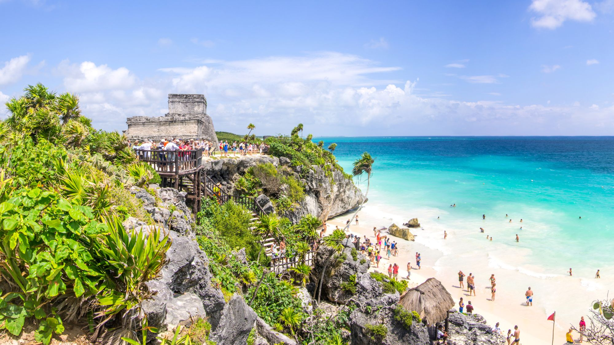
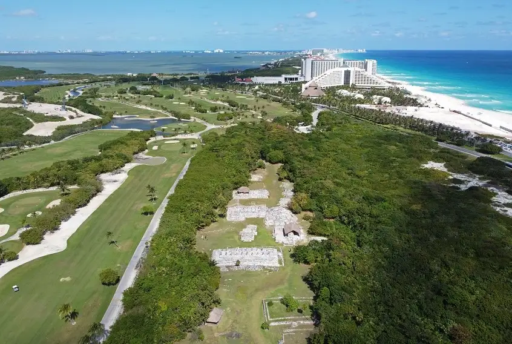
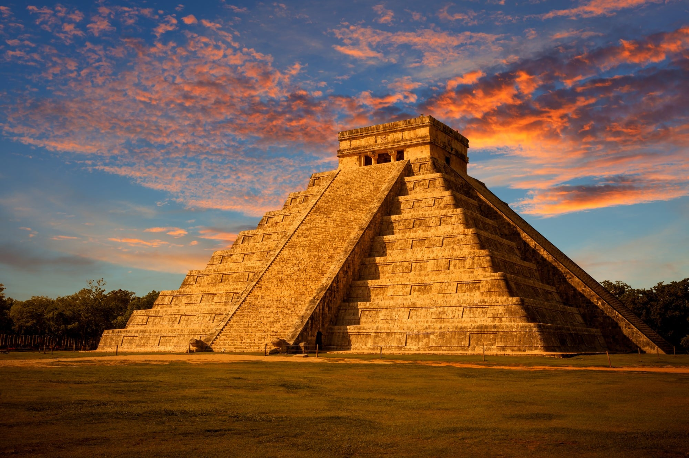

Rich Cultural Heritage
Cancun is not only known for its beautiful beaches but also for its rich cultural heritage. The area is home to several ancient Mayan ruins that attract historians and tourists alike.
Image Source: example.com
El Rey Ruins
The El Rey Ruins are located in the Hotel Zone of Cancun and offer a glimpse into the ancient civilization that once thrived in this region.
Image Source: example.com
Chichen Itza
Chichen Itza is one of the most famous Mayan archaeological sites and is located just a few hours from Cancun. It's a UNESCO World Heritage Site and one of the New Seven Wonders of the World.
Image Source: example.com